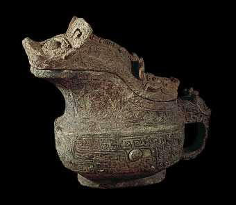

Shang king's wifeA woman like this would have been very unusual. However, archaeologists have found evidence of one such female military leader. Fu Hao was one of the consorts of the Shang king, Wu Ding. She was very unusual in that she played an important role in many battles and wars. She led military campaigns against neighbouring tribes. 
This animal shaped jug is very similar to many found in the tomb of Lady Fu Hao. The discovery of Fu Hao's tomb was very important as it was the only royal Shang tomb that was found intact at Anyang. Anyang was the site of the last capital of the Shang dynasty. Over two thousand items were recovered from the tomb, 750 of these were jade objects and 468 were made of bronze. She also had a large number of weapons in the tomb; this shows her status as a military leader. |